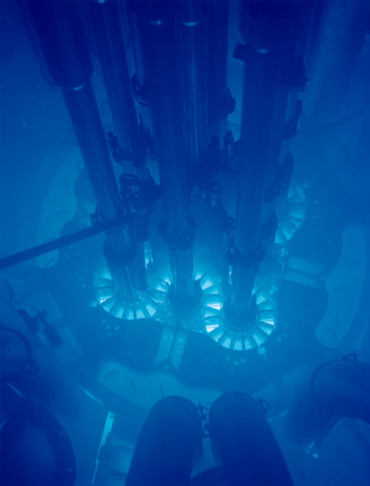
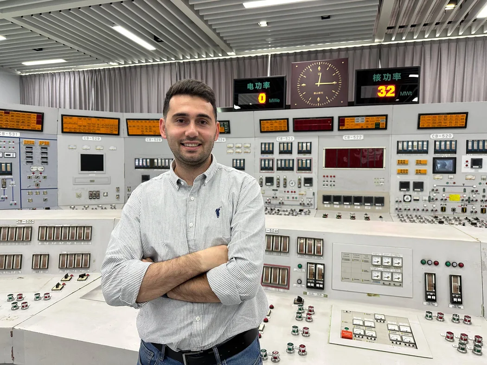
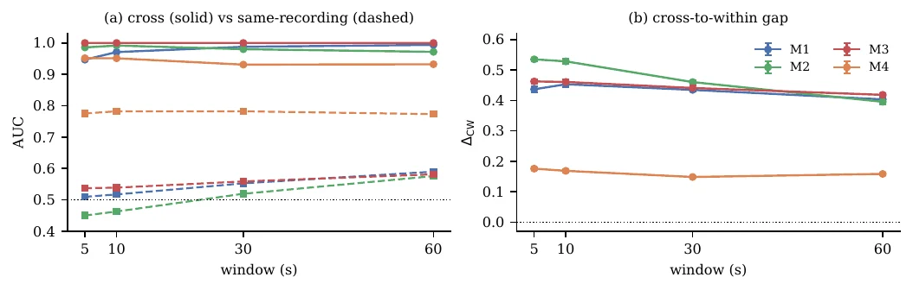

Mustafa Umut Ozbek / Ontario Tech University
Nuclear engineering and OT cybersecurity research
My research connects nuclear engineering and reactor simulation with instrumentation and control, data analysis, and cybersecurity. I am interested in the evidence engineers use to judge whether a system or monitoring model is performing as expected.
Nuclear reactor modeling and simulation
I study the integration of small modular reactors (SMRs) with battery energy storage systems. Reactor and energy-system models help me explore how changes in demand affect plant and storage behavior. Simulation also gives me a controlled environment for asking which process measurements would help an operator or monitoring tool interpret a change.
My training in nuclear engineering and management at Tsinghua University covered nuclear reactor engineering, computational fluid dynamics, and advanced energy-system design.

Nuclear instrumentation and control (I&C)
Nuclear I&C connects what instruments measure to what control systems and operators can observe. At Tsinghua University's Institute of Nuclear and New Energy Technology, I studied explainable machine learning for identifying anomalies in nuclear instrumentation and control data. The question was how to explain why a model flagged an event in terms that are meaningful to an engineer.
At Ontario Tech University, I supported practical instruction in nuclear energy systems, I&C, and OT cybersecurity using the IAEA Asherah Nuclear Simulator.
Nuclear I&C anomaly detection preprintSimulator-based teachingIAEA ICONS presentation

AI/ML for nuclear and OT cybersecurity
My OT cybersecurity research focuses on how to evaluate machine learning for industrial control systems (ICS). A detector can score well because its evaluation setup makes different data recordings easy to distinguish. That is a different problem from identifying an abnormal event while the system is running.
At IEEE CASCON 2026, we reported how eleven industrial anomaly detectors responded to changes in training-data quality. Our ICSS 2026 work, accepted for presentation alongside IEEE ACSAC, examined how evaluation changes when a model is tested within a recording. CASCON paper and ICSS paper.

Nuclear engineering project management
My industry experience includes nuclear construction scheduling, resource planning, engineering coordination, and research and development leadership. I have worked across technical teams on industrial automation, software integration, and process improvement. That experience informs my interest in where research methods fit into engineering decisions and project delivery.
I support teaching in project management at Ontario Tech and completed its Nuclear Career Accelerator Program.